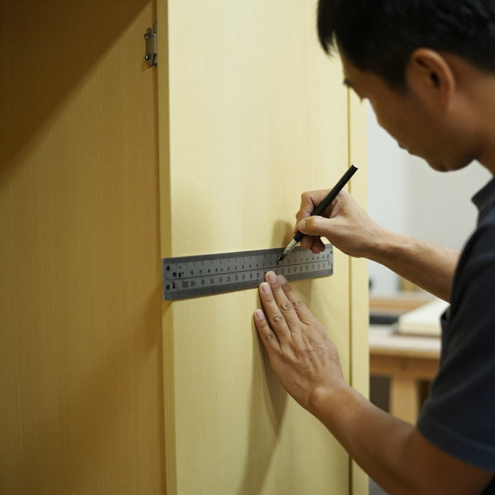
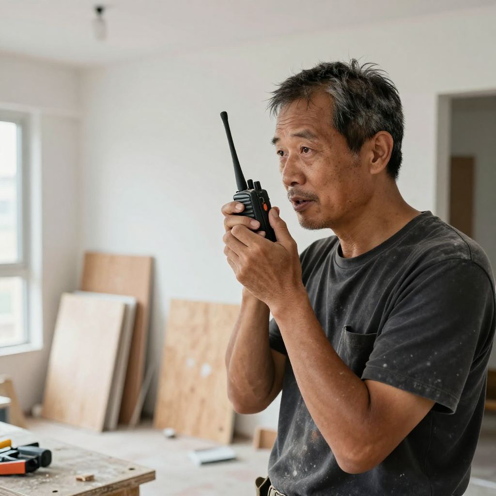

暴雨黑雨下的木工枱——張丹楓同祥叔讲九一八

📍 場景：觀塘舊樓工地｜主講：祥叔（觀塘木行三十年幾老行尊）｜主筆：張丹楓｜整理：雲蕾｜日期：2026年9月18日（九一八）｜業主：陳生｜WhatsApp 報價：852 5190 2328
序幕：紅雨下面嘅木工枱
九月十八號朝早十點幾，天文台已經掛咗黃色暴雨，啱啱又改掛紅色。我同雲蕾喺觀塘一個舊樓單位做全屋訂造——業主陳生上個月先收樓，六百零幾呎兩房，造埋三個到頂衣柜、飯廳一組餐邊矮櫃、主人房一套書枱床，預算講到四十几萬落樓。雲蕾噚晚趕咗通宵嘅 3D 圖，今朝特登過嚟同業主對色板。
本來講好今日拆牆同鋪地板底板。點知八點半到工地，雨已經大到對面樓宇睇唔清。祥叔——觀塘木行三十年幾嘅老行尊，六十幾歲，我哋行內都叫佢「祥叔」——企喺窗邊睇完天，又睇下手機個天文台 app，轉過身嚟同我講：
「丹楓，今日唔做得大陣象，叫業主陳生嚟睇下啲板先。你去樓下買兩壺凍檸茶，錢我俾。」
「祥叔，落雨天唔係更應該趕工咩？業主日日追電話嚟問幾時完工。」
「我哋呢行最忌就係『趕』字。舊時我師傅同我講，木頭係有呼吸嘅。落大雨嘅日子，濕度去到八十几九成，你硬係刨、係鋸、係開料，聽日天一轉，板就漲、就翹、就裂。到時業主入伙三個月，衣柜門關唔實，你話邊個賠？」
第一幕：板件驗收，頭三日係試用期
佢指一指窗台嗰疊業主簽收嘅夾板：「呢批係俄羅斯樺木多層板，最怕水氣。今日你睇下邊邊塊有翹邊、有黑邊、有結疤——一齊登記低，唔好出聲。聽日天晴開料，先用電刨輕刨走表面一層『水皮』，等佢釋放返內部應力，然後再做淨料。你記住，所有板落工地，頭三日都係試用期。」
我老婆雲蕾喺旁邊用記事簿寫低：板件驗收、翹邊黑邊結疤登記、聽日工序。佢抬頭問：「祥叔，咁我哋今日成日坐喺度飲凍檸茶？」
「坐喺度做嘢。」
第二幕：九一八，相簿背後嘅木工世家
佢攞出一疊黃銅色嘅舊相——係九十年代佢喺油麻地果間細木工廠做學徒嗰陣影嘅。相入面，十幾歲嘅祥叔，企喺一部英國老叉車前面，背後掛住一塊木牌，寫住「廣興隆木行」。
「一九三一年今日，日本人喺瀋陽炸咗條南滿鐵路，反過嚟話係中國人搞事，就咁樣蠶食我哋東北。嗰年，我阿爺十四歲，喺東莞鄉下做木工學徒；聽我阿爺講，嗰幾年兵荒馬亂，木行都冇生意，佢要上山斬柴、擔去鎮上賣，先夠養起一家八口。」
祥叔將相簿擺喺木工枱上，喺一張寫到一半嘅報價單背面，用鉛筆慢慢畫：
「你睇下，呢個係我阿爺嗰陣用嘅『魯班尺』——唔係宜家你哋用嘅捲尺。魯班尺係門公尺，一面量長度，一面量吉凶。門闊幾多、門高幾多，唔係亂嚟，要對得住門公尺上面嘅『財、病、離、義、官、劫、害、本』八個字。」
第三幕：魯班尺嘅規矩，幾毫之爭
我笑：「祥叔你信呢啲㗎？」
「信唔信係一回事，但香港人嘅老規矩唔可以丟。我哋做訂造衣柜，每一個高度都係幾毫之爭。譬如到頂衣柜，多數人造去 2.4 米天花底，但我會自己減返三毫米落去，留返批灰層同天花之間嘅伸縮位。咁樣三年五年之後，天花冷縮熱漲，衣柜頂先唔會頂到發霉、頂到裂。」
「同樣道理，做地腳線，我哋一定會留五毫米嘅『呼吸位』，再用玻璃膠封住，唔可以直接打實。打實咗，聽日落大雨返潮，木板冇地方發力，就拱起。」

第四幕：對講機嗰邊，落雨天嘅交代
祥叔指一指牆上釘住嘅一張 A4 紙，上面寫住「九一八」三個字，再下面細細隻字寫：「勿忘國恥，珍惜手藝。」
「我阿爺嗰年做學徒，做嘅係整副棺材板嘅粗糙功夫。到我八十年代入行，已經做訂造家私。時代唔同，但手藝嘅精神一樣——唔好貪快，唔好貪平，對得住塊木頭，對得住業主一家大細住十年八年嘅家。」
我抬頭望出窗外，雨勢已經細返少少。祥叔拎起部對講機：
「喂，陳生係咪？今日紅色暴雨，我哋今日先做板件驗收同埋度尺覆核，聽日天晴即刻開工，絕對唔會延誤工期……您放心，落雨天做嘅嘢先最穩陣。」
「睇下，你學嘢唔係學我哋點刨板、點鋸木，係學點同業主講嘢。香港人最怕就係『冇交代』三個字。你有交代，業主先安落；業主安落，先肯俾你做下一單。」
雲蕾寫低最後一句：「落雨天嘅交代，係香港裝修最值錢嘅服務。」

尾聲：守好每一塊木頭
跟住佢哋三個，一個喺度用魯班尺重新核對門板高度，一個喺度用電鑽試位釘底板，一個用記事簿記低每一句同每個數。
窗台嗰張報價單背面，祥叔寫多咗一行字：
「一九三一·九一八——木工手藝人，記住前輩喺亂世養我哋，今日我哋喺盛世守業主嘅家。」
雨聲漸收。聽日開料。今日先守好每一塊木頭。
——祥叔口述，張丹楓筆記，雲蕾整理，二〇二六年九月十八日，觀塘舊樓工地
❓ 九一八手藝三問
Q1：落雨天裝修最忌咩？
最忌「趕」。濕度去到八十几九成時刨、鋸、開料，聽日天一轉板就漲翹裂。香港做法係停做濕工序，先做板件驗收、度尺覆核、文件交代，聽日天晴先開料。所有板落工地頭三日都係試用期，要登記翹邊黑邊結疤。
Q2：到頂衣柜點解要減三毫米？
2.4 米天花底唔可以直接造到 2.4 米整，要自己減返三毫米留伸縮位，等批灰層同天花之間有冷縮熱漲嘅空間。三五年後天花郁動，衣柜頂先唔會頂到發霉裂開。地腳線亦要留五毫米呼吸位再用玻璃膠封，唔可以打實，否則返潮就拱起。
Q3：舊樓裝修點樣同業主「交代」？
香港人最怕「冇交代」三個字。無論係紅雨停工、板材翹邊、抑或工期延一日，都要打電話／對講機同業主講清楚：今日做咗咩、聽日做咩、幾時交貨、有咩風險要佢哋知道。有交代，業主先安落；業主安落，先肯俾你做下一單。
本文配圖均為 AI 場景示意圖，僅供場景參考，並非真實工地照片或業主影像。
想知你個單位裝修要幾錢？
📱 一鍵 WhatsApp 張丹楓